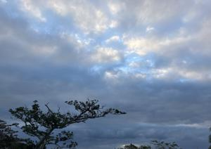
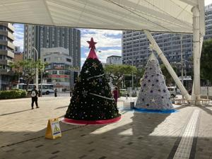

うるがいの話 ある日
最新: 四十九日【うるがいの話 ある日】とは 一日だけのプログです
『うるがいの話』の最新一日だけのプログで、通信料が少なく経済的だ。カニの画像をクリックすると全ての日付が載る『うるがいの話』サイトを表示します
|
|
【うるがいの話】 うるがい(ｳﾙｶﾞｲ urugai)とは、『もずくがに』の名前でとても大きくなります。 |
|---|---|
|
|
【カミマヤーの話】 猫のことを方言でマヤーといいます。カミマヤー（kamimayaa）とは、神の猫のことです。 |
|
【たながぁの音楽】 たながぁ（ﾀﾅｶﾞｰ tanagaa）とは手長えびのことで、何種類かあり大きいのは車 エビぐらいになります。 |

|
【ぶながぁの話】 ぶながぁ(ﾌﾞﾅｶﾞｰ bunagaa)とは、赤い髪の毛、赤い身体、そして身長は１ｍ２０ｃｍ ぐらい、川の蟹を食べているの目撃された。場所は沖縄県国頭郡大宜味村のと ある村僕の隣近所に住んでいる爺さんから、聞いた話です。 |
|
|
【ギーマの話】 ギーマ(giima)とは、山原の里山に咲くスズランに似た、 花を付けます。実は食べられます、 気が付くと口の周りが紫になっています。 |
2024年12月20日 (金）四十九日
15:19
 
今日は、四十九日です。あとは、あの世で楽しく過ごして下さいと拝む。
『早く、天国へ行きたい』が口癖だったお義母さん、果たして天国でしょ
うか。
もしもし、うるがいです、タナガヤーの！、『ああ、御無沙汰しています
、電話帳に載っていない番号だったので、不信な電話と思って電話取りま
せんでした、いま、いろいろと迷惑電話があるので。ええ、お母さんは次
女がみてます、施設には入りたくないといっているので。認知が少しあり
ますが、元気ですよ、キャン家は長生きする家系ですから、まだまだ。会
いたいですね、ただ、いまのじき私もお店が忙しくて、年が明けてから』
ええ、１月の中旬ごろ、連絡くださいと電話をきる。
身近な人達が亡くなってしまうので、もしかしたら小母さん（父親の弟（
故人）の妻）も？と従兄たちに連絡しようと思い立ち、２週間前に電話す
るも、なかなか電話をとってくれない。長女から、昨日電話があった。と
りあえず、安心する。電話して良かったと思う。